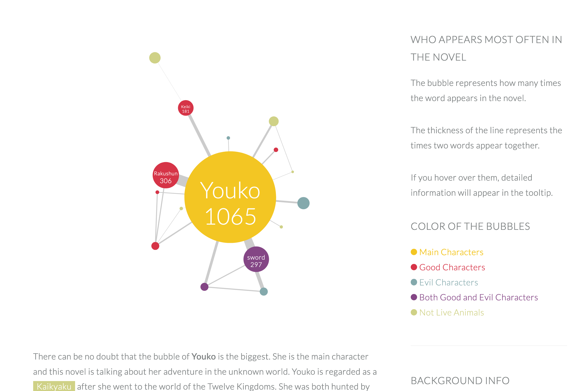

As I mentioned before, I met tons of troubles I never imaged before. I overcame most of them, and some still need to do more work. I divided those troubles into three groups: scrape and clean the data, build the website, improve the website.
- Scrape and Clean the Data
I spent nearly the whole of February to scrape and clean the data from the website Bilibili. And I met 3 problems:
- Scraping Chinese is different from English. I learn how to use library pandas to scrape Chinese.
- Because I’m in the US now, I can’t load the comments unless use VPN. So, I asked my friend in China to run the code on his computer.
- Another problem is I have no idea how to do n-gram in Python. Even though I watched some tutorials, it’s still so hard for me to understand. Fortunately, Deb recommended the book Text Mining with R to me. Do n-gram by R is much easier. In this way, I successfully found out the relationships between characters, and words.

Clean and roughly visualize the data by R
- Build the Website
Then I focused on the visualization by d3 and website building during March. I tried different style charts, change the thickness of the line between bubbles, organize the context and charts.
I tried to create bubbles by D3 after solving the n-gram problem. The challenge at this step is to create force among bubbles and change the stroke between them into different thicknesses. Because I created treemap charts by D3 last semester, I wasn’t stuck with the JSON file for a long time.
I know my article will be very long, since there are seven book series, bullet screen comments and bottom comments will be visualized and analyzed. So, I need to organize my website very convenient for users to go through.
Build the website, combine the charts and contents.